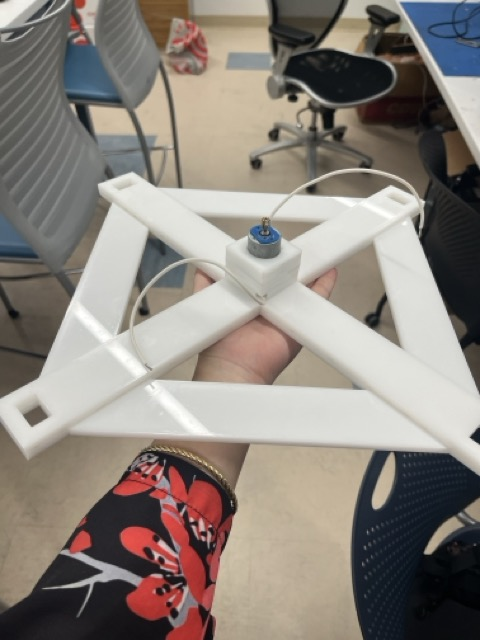
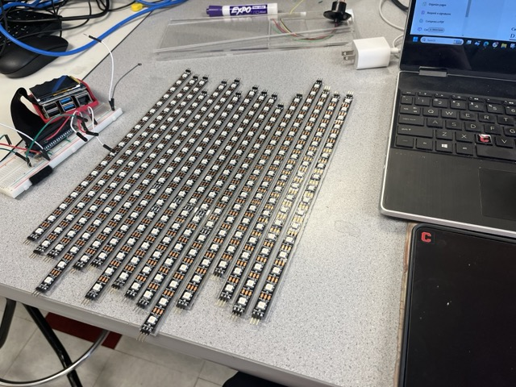
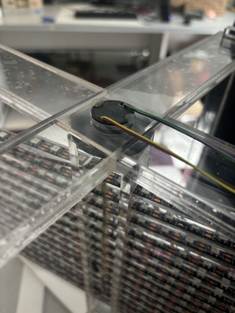
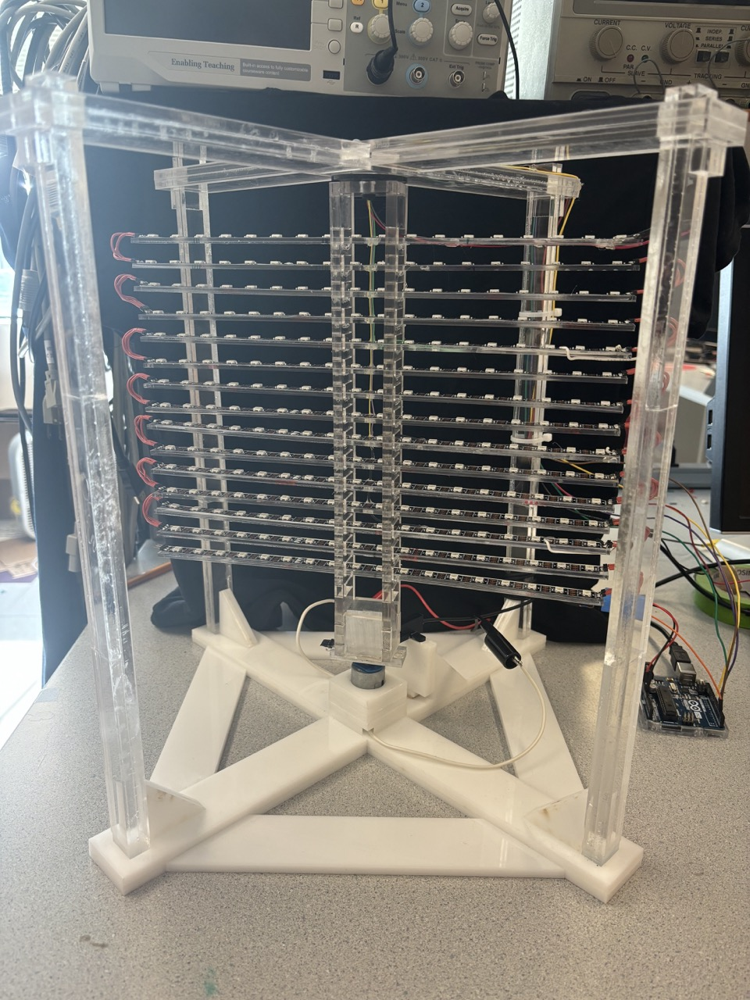
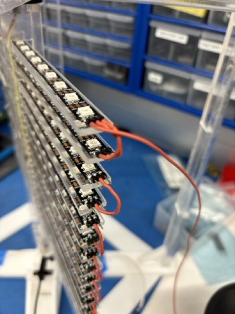
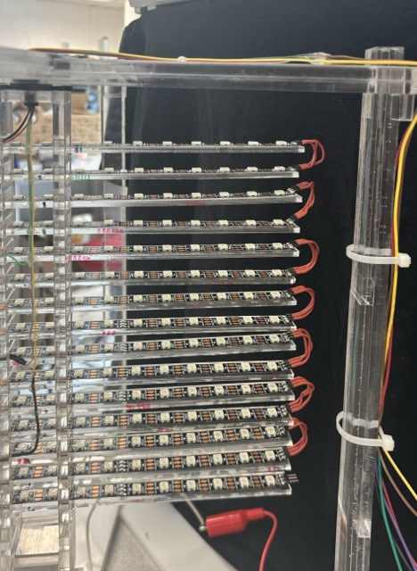
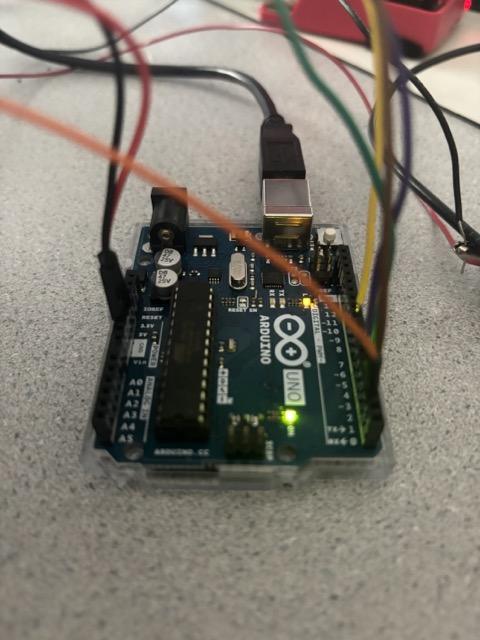
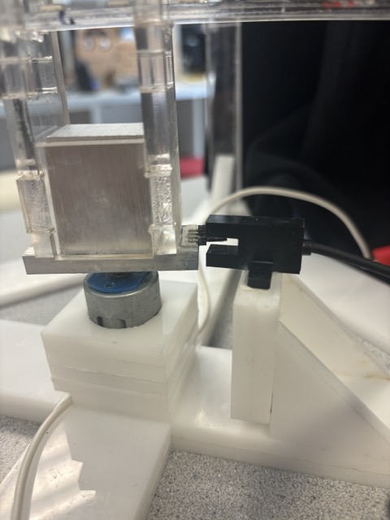
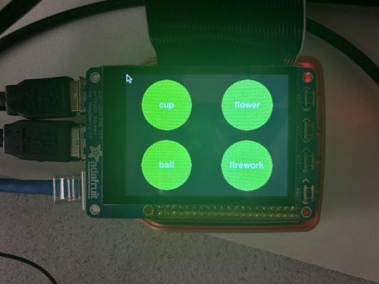

Yueming Liu (yl3426) and Vicki Yang (vzy3)
Spring 2024
Flat LED displays provide convenient ways to display images in 2D, but 2D displays can feel flat and lifeless.Our project is a volumetric display and aims to display images in 3D. Using a spinning matrix of LEDs, 3D images and animations can be displayed with a persistence of vision effect.
The goal of our project was to use the persistence of vision effect to display 3D images and animations using a 2D LED matrix. Through spinning the LED matrix, we want to utilize the persistence of vision effect to blink LEDs in rapid succession to generate images and animations that make it appear as if there is a 3D display, like a hologram. In essence, we want to create 3D from 2D. More broadly, one of the motivations behind our project is as a method for creating mesmerizing customizable 3D light displays in cities like New York for holidays and special events.
Our hardware setup consisted of the following components: a laser cut acrylic frame that supports a DC motor, the LED matrix made up of WS2812 LED strips, and photo gate, a Raspberry Pi 4 and PiTFT, an Arduino Uno, and a slip ring and wires. The DC motor was built into the frame and is used to rotate the LED matrix. The LED matrix consists of 15 LED strips attached to custom cut acrylic pieces arranged in a grid. To control the LED matrix, an Arduino Uno was used. The arduino is connected to a photo interrupter (IR sensor) that is attached to the frame and is used to detect the starting point of the display to properly show images and refresh LEDs. The Raspberry Pi communicates with the Arduino over serial connection to program the LEDs using custom GUI control that is accessible on the PiTFT. The LEDs, motor, and Raspberry Pi are powered using separate power supplies/sources.
The key part of a persistence of vision/volumetric display is the spinning of LEDs. For our spinning LED component, we chose to have a grid display made up of LED strips arranged as a matrix. Our LED matrix consisted of 15 strips of 18 LEDs. We opted to use a DC motor to rotate the matrix. In order to ensure that there was minimal wobble while the display was spinning, we decided to design and build a custom frame. The frame was constructed using laser cut acrylic. We used clear acrylic so the LEDs could still be visible even if the display was encased. The frame has cross-shaped top and bottom pieces and four support beams for max stability with minimal material use. The motor was built into the frame to keep it stable while operating. Due to this, we aren't able to switch out the motor without disassembling the frame. The motor mount can be seen below:
The next step in building the display was constructing the LED matrix. To do this, we cut the whole LED strip (300 LEDS total) into segments of 18 LEDs and glued these to custom cut acrylic bars. We soldered header pins to the ends of each strip to allow for easy testing and connections. The completed LED strips can be seen below:
Once we had constructed all of the LED strips, we assembled them into a matrix and attached the matrix to the frame. The LEDs strips fit into a central column through slots and were hot glued in place. Since there wouldn't be much force on the LED strips, hot glue is sufficient to hold them in place. We needed to take care to make sure that the strips were in alternating directions since the LEDs strip is directional and data must be passed from one strip to another in our setup. If the strips were not placed in alternating directions, then we would need to have wires traversing the matrix lengthwise. Upon affixing the LED matrix to the motor, we assembled the rest of the frame around the LED matrix and secured it in the frame. We attached a slip ring to the top of the frame so that the LED matrix could easily spin and wires would not get in the way of it's motion. A close up of the slip ring is shown below:
The complete frame can be seen here:
Due to lag when lighting up strips of greater than 100 LEDs, we chose to split our matrix up into series (sections of LED strips) of four strips each (one ended up going missing so we had a single series of three strips at the bottom of our matrix). Since we needed to pass data to four separate LED strips series, we used a six wire slip ring. Two of the wires were allocated to power and ground and the remaining wires passed data (inputs) to the LED strips. We also needed to connect all the strips to each other to allow for power and ground to be transmitted to all LEDs and for data to be passed within a series. Upon the recommendation of a TA and due to the labor intensity of soldering all these connections, we simply slipped short pieces of flexible stranded wire onto header pins that needed to be connected. The power and ground connections were continuous throughout the matrix but the data connections are contained in series (sections of 3-4 LED strips). A close up of this wiring method can be seen below (only data connections are shown completed here):
Using the slip ring wires, we soldered each wire to its associated data input. The wires were soldered to the starting LED of each series. In this setup, each of the four remaining slip ring wires is able to pass data to its LED series. This means that each series can be controlled separately (but this also means we need to pay close attention to image mapping later on). The completed wiring is shown below:
A t-slot photo interrupter is also mounted to the frame and is used to determine the starting point of the LED strip's rotation. This is used in the programs to update LEDs and maintain a consistent display.
The LEDs are controlled by an Arduino Uno (more details on why in the Software Design section). Each series of LED strips receives a signal from the Arduino and use pins 3, 5, 6, and 9 on the Arduino. The t-slot photo interrupter is also connected to the Arduino using pin 2 and is powered through the Arduino as well. The Arduino is connected to the Raspberry Pi using serial connection and the Raspberry Pi itself is connected to a PiTFT (touchscreen) to allow for a GUI.
The system uses three power sources/supplies in total. The LED matrix and motor are each powered with a power supply, using 5V and 3-5V respectively. We experimented with using a battery pack or other stored power supply for the LED matrix, however, it resulted in inaccurate lighting patterns, potentially due to the current draw of the LED strips. At max brightness, each LED is capable of drawing 60mA of current. The Raspberry Pi is also directly powered through an outlet.
LED control was surprisingly one of the trickiest aspects of this project. We delve into this further in the Development section of this report. In the end, we used an Arduino Uno to control the LEDs with arduino programs. Within the arduino programs, we mapped custom image and animation displays to the LEDs. We were able to create a persistence of vision display by determining the RPM of the LEDs using the t-slot photo interrupter and updating the LEDs using this point of reference.
We implemented a GUI on the Raspberry Pi to control the volumetric display and have it display some preset images. The GUI was built using Pygame and displayed on the PiTFT. Once a user selected a preset display using one of the on screen buttons, the script would write to a text file (pattern.txt) which is continuously read by a C program that uploads programs to the Arduino for the correct display. As a whole, these programs are run in a bash script that executes the python script in the foreground and the C program in the background.
Volumetric Display mappings were created manually using a map of LED indices and programmed using subsets of indices. Since we needed to manually map the displays, we only created four display options for the GUI. Mapping 3D animation displays required mapping arrays of LEDs that needed to be lit for each frame of the animation.
Shockingly, controlling the LEDs was very difficult. At first, we tried to use the Adafruit Neopixel Library. We soon discovered that this wouldn't be possible since the library only allows for the creation and control of one LED strip object at a time and we needed four separate series of LED strips. We then pivoted to trying to use DMA to control the LEDs directly from the Raspberry Pi still. Unfortunately, the signal transmit times were too slow to properly operate the photo interrupter and LED strips. Since we had exhausted our options of trying to control the LEDs using the Raspberry Pi directly, we chose to use an Arduino Uno to control the LEDs and communicate with the Arduino using the Raspberry Pi. Ultimately, using the Arduino was the best solution given the sitation on hand.
An issue we ran into while building the frame is due to the tolerancing of the design. Since we had many pieces that needed to fit together, very little tolerancing in the initial design meant that the pieces could not fit together since the fit was too tight. Therefore, the support beams did not fit into the slots of the frame initially. To fix this, we used a band saw to sand down the bottoms of the beams so they could be slid into the slots and fixed in place. Once we sanded the beams to better fit the slots in the frame, we were able to piece everything together nice and securely.
Another unexpected issue that we ran into and were stumped on for a while related to controlling the LEDs by uploading programs to the Arduino from the Raspberry Pi. Initially, we tried to use the Python subprocess module to run a bash script from our GUI script. For some reason, we were able to run the bash script through the commandline with no issues but were unable to run the bash script and successfully upload programs to the Arduino using a subprocess. It seems to have been due to some package access issues that the Python subprocess module could not accommodate but we aren't sure. Next, we tried to upload code to the Arduino using a C program. Luckily, this worked which resulted in our current software architecture. Since we needed to use Pygame for the GUI, we still needed the Python script. We ended up constructing a software system where the Python script would write to a text file based on the user input and the C program would detect changes in the text file and read the user input from it and upload the necessary program to the Arduino for the selected preset display.
In the end, we were able to built and program a volumetric display that was able to generate static (i.e. 2D), 3D, and animated displays using the persistence of vision effect. We accomplished the basics of what we set out to do in our project outline which were to build a volumetric display and be able to generate displays. Unfortunately, we weren't able to accomplish our reach goals of allowing for custom image mapping and user input.
Currently, we have pre-determined images mapped to the LED matrix that allow us to generate displays of these images using the volumetric display. Ideally, we'd like to be able to simply input an image file to a python script that will generate the LED mappings needed and just input these mappings to our display program. This would also require that we track the RPM and update accordingly. Unfortunately, the current motor doesn't generate a high enough RPM to allow for high enough frame rates to display a consistent image (without blinking). We would need to acquire to potentially redesign the frame to accommodate a more powerful motor. An additional consideration with a new powerful motor is to build a cage around our design so that people can't accidentally come into contact with the rapidly spinning LED strips.
Another feature we'd like to implement in the future is custom image inputs through the GUI. For this to occur, we might set up a wifi connection and allow for users to upload an image file to the Raspberry Pi which would be converted with the image to LED mapping script mentioned above. We were also considering allowing for users to upload STL files since this is a 3D display, however, we would need to write an additional conversion program to allow for this.
In future implementations, we hope to allow for more customization with image display and implement some safety features since there are concerns with people coming into contact display as it rotates.
Hello! We're Yueming and Vicki. We're actually roommates, but we've never seen each other as much as while we worked on this project. We've spent a lot of time in the labs over the past few weeks working together on this project. We're actually both CS majors (Yueming is CS+MechE and Vicki is CS+ORIE), but we thought it'd be fun to take a project-based ECE course. We both worked on laser cutting and building the frame and getting the basics set up.
Yueming designed the mechanical structure and worked on 3D animated display LED mapping, as well as the touchscreen setup.
Vicki worked on animation display LED mapping, GUI to Arduino communication, and the report website.
Raspberry Pi 4
PiTFT Touchscreen
16gb SD Card
Arduino Uno
Acrylic
DC Motor
Hot Glue
Wire
Soldering Iron/Solder
Capacitor
Header Pins
Aluminum Scrap
Adafruit 6 Wire Slip Ring ($14.95)
Adafruit T-Slot Photo Interrupter ($3.95)
LED Strip ($30.69)